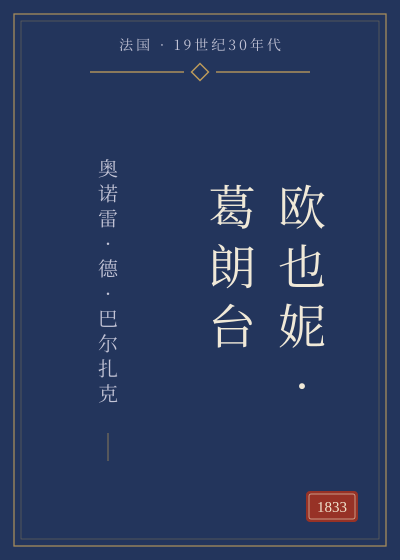
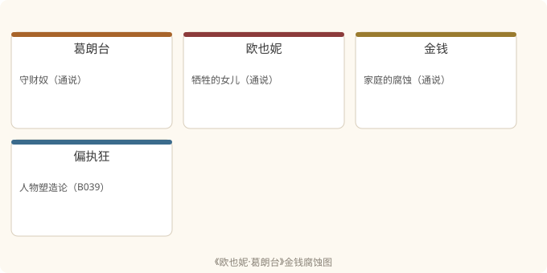

欧也妮·葛朗台
一、基本信息
| 作者 | 巴尔扎克 |
|---|---|
| 成书/出版 | 1833年（Britannica B039：《人间喜剧》列举 Eugénie Grandet——出版年通说待核） Honoré de Balzac — Encyclopaedia Britannica（百科全书） |
| 国别/地区 | 法国 |
| 时代 | 近代 · 19世纪30年代 |
| 体裁 | 长篇小说 |
| 语言 | 法语 |

《欧也妮·葛朗台》金钱腐蚀图（主题·结构图）
二、创作背景
Britannica（B039）：《人间喜剧》约90部——Eugénie Grandet 在列举之列（作者页注记）。
Britannica（B039）：巴尔扎克——'现实主义主要先驱、现代小说系列开创者、公认史上最伟大小说家之一'之评；'偏执狂'人物塑造论。
题材（通说待核）：索缪城的守财奴葛朗台与其女欧也妮——金钱对家庭的腐蚀。
三、内容脉络
（通说待核——B039未载剧情）守财奴的遗产游戏与女儿的牺牲。
（通说待核）堂弟夏尔的到来与巴黎的诱惑。
四、主要人物表
| 人物 | 身份 | 说明 |
|---|---|---|
| 葛朗台 | 守财奴 | （通说待核——'守财奴文学经典'之注记） |
| 欧也妮 | 女儿 | （通说待核，B039未载） |
五、主题与艺术特点
- 金钱对亲情的腐蚀（通说待核）。
- '偏执狂'人物塑造（B039：人物塑造论）。
- 外省与巴黎的对比（通说待核）。
六、影响与评论
- Britannica：'现实主义主要先驱'（B039 作者级）。
Honoré de Balzac — Encyclopaedia Britannica（百科全书） - Britannica：《人间喜剧》人物复现法（B039）。
Honoré de Balzac — Encyclopaedia Britannica（百科全书）
七、阅读建议
难点
- 复辟时期外省社会（通说待核）。
- 《人间喜剧》体系定位。
- 《欧也妮·葛朗台》中译本（人民文学/上海译文等——通说待核）。
- 法文原版（公有领域）。
巴尔扎克入门首选；与《高老头》对读。
八、待核实
- 1833年出版细节核对（通说）。
- 葛朗台/欧也妮/夏尔人名核对（B039未载）。
- 与《人间喜剧》分册归属待核。